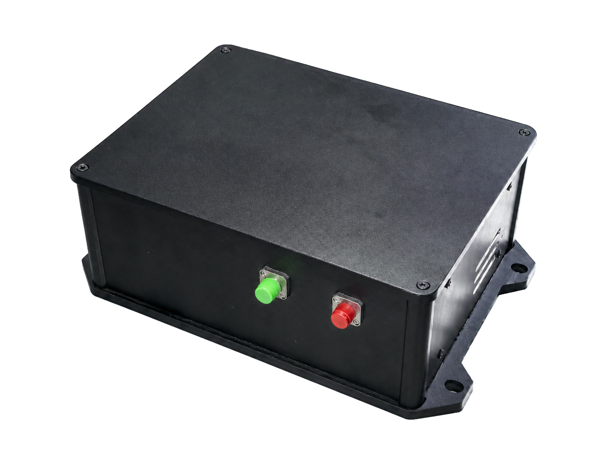
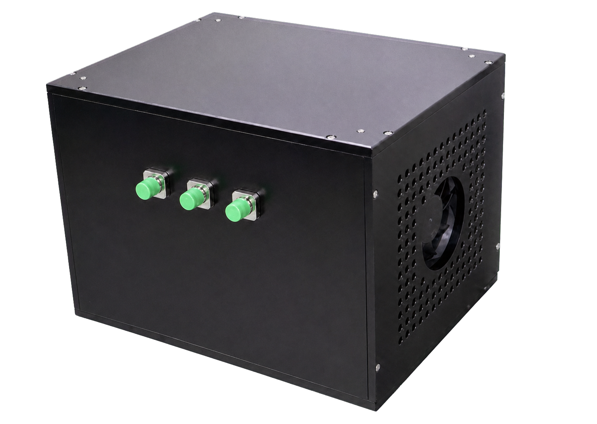

SR-LC01
自由运行光纤光频梳
10 MHz-100 MHz可定制 · 飞秒脉冲输出 · 一键启动
面向超快光学、宽带光谱与非线性实验的小型化光纤频率梳。系统工作于1550 nm波段，提供10 MHz-100 MHz的重复频率可选配置，可选本征脉冲输出、相干放大及光谱扩展模块。
形态
- 16 cm x 12 cm x 8 cm
- FC/APC输出接口
- 本征脉冲、相干放大及光谱扩展可选
功能
- 1550 nm波段飞秒脉冲输出
- 一键启动
- 重复频率10 MHz-100 MHz可配置
Form Factor
SR-LC系列覆盖小型化自由运行光纤光频梳与重复频率锁定光纤光频梳，面向超快光学、宽带光谱、双梳测量、时序同步与长期实验平台。
SR-LC01 自由运行光纤光频梳：16 cm x 12 cm x 8 cm；FC/APC输出接口；本征脉冲、相干放大及光谱扩展可选
SR-LC02 重复频率锁定光纤光频梳：20 cm x 20 cm x 25 cm；PZT腔长反馈；上位机通信接口


Functions
每个系列下的具体型号与功能如下。
SR-LC01
10 MHz-100 MHz可定制 · 飞秒脉冲输出 · 一键启动
面向超快光学、宽带光谱与非线性实验的小型化光纤频率梳。系统工作于1550 nm波段，提供10 MHz-100 MHz的重复频率可选配置，可选本征脉冲输出、相干放大及光谱扩展模块。
SR-LC02
重复频率锁定 · 低漂移输出 · 长时间稳定
在SR-LC01基础上增加重复频率闭环控制，通过PZT动态调节光纤腔长，将重复频率锁定至外部低噪声微波参考，有效抑制重复频率漂移与相位噪声。
Specifications
| 型号 | 项目 | 典型值 / 范围 | 说明 |
|---|---|---|---|
| SR-LC01 | 中心波长 | ~1550 nm | 典型工作波段 |
| SR-LC01 | 典型重复频率 | 10 MHz-100 MHz | 典型10 M / 50 M，可定制 |
| SR-LC01 | 输出接口 | FC/APC | 光纤输出 |
| SR-LC01 | 启动控制 | 一键启动 | 便于实验室使用 |
| SR-LC01 | 输出配置 | 本征脉冲 / 相干放大 / 光谱扩展 | 按应用需求配置 |
| SR-LC01 | 控制方式与供电 | 上位机通信接口、AC 220V | 支持系统接入 |
| SR-LC02 | 中心波长 | 1550 nm | 典型值 |
| SR-LC02 | 典型重复频率 | 10 MHz-100 MHz | 典型10 M / 50 M，可定制 |
| SR-LC02 | 锁定方式 | PZT腔长反馈 | 锁定至外部低噪声微波参考 |
| SR-LC02 | 输出接口 | FC/APC | 光纤输出 |
| SR-LC02 | 重频秒稳 | ~10^-10 | 典型值 |
| SR-LC02 | 供电方式 | AC 220V | 标准供电 |
注：参数支持按应用场景定制，最终以实际配置和测试条件为准。
Applications
具有稳定的数百飞秒脉冲输出能力，支持脉冲表征、非线性频率转换与超快过程研究，可支撑高校、光纤非线性和超快光学实验场景。
具有可选的宽带光谱扩展能力，支持超连续谱产生和多波段光源输出，可支撑材料光谱研究、宽带光谱分析及多波段光学探测场景。
具有一键启动和重复频率配置能力，支持光频梳基础研究、双梳光源搭建等，可适应实验室频率梳平台和定制化光电系统集成场景。
具有重复频率稳定锁定和重频差精确配置能力，支持双梳异步光学采样与长期相干数据采集，可支撑双梳光谱、高速动态测量等场景。
具有将重频锁定至外部微波参考的能力，支持稳定脉冲序列输出和重复触发测量，可适应超快光学、时间分辨测量及光电同步场景。
具有一键启动、低重频漂移和长时间闭环运行能力，支持连续实验、自动数据采集，可支撑实验室长期观测平台和定制化光电集成场景。